🚀 Getting Started
What is Scout Tracker?
Scout Tracker is a web-based pitch tracking app designed for youth baseball teams. It helps you:
📊 Track Pitches
Log every pitch with type, location, and result in real-time during games
⚠️ Protect Arms
Monitor pitch counts with visual alerts when approaching limits
🔍 Scout Opponents
Build a database of opponent tendencies for future matchups
📈 Analyze Stats
View team and individual statistics with visual charts
Step 1: Open the App
Go to: lamangamatt.github.io/scout-tracker
Step 2: Enter Your Team Code
Your team code is a unique identifier (like bingham2026) that keeps your team's data separate from others. All coaches on your team should use the same code.
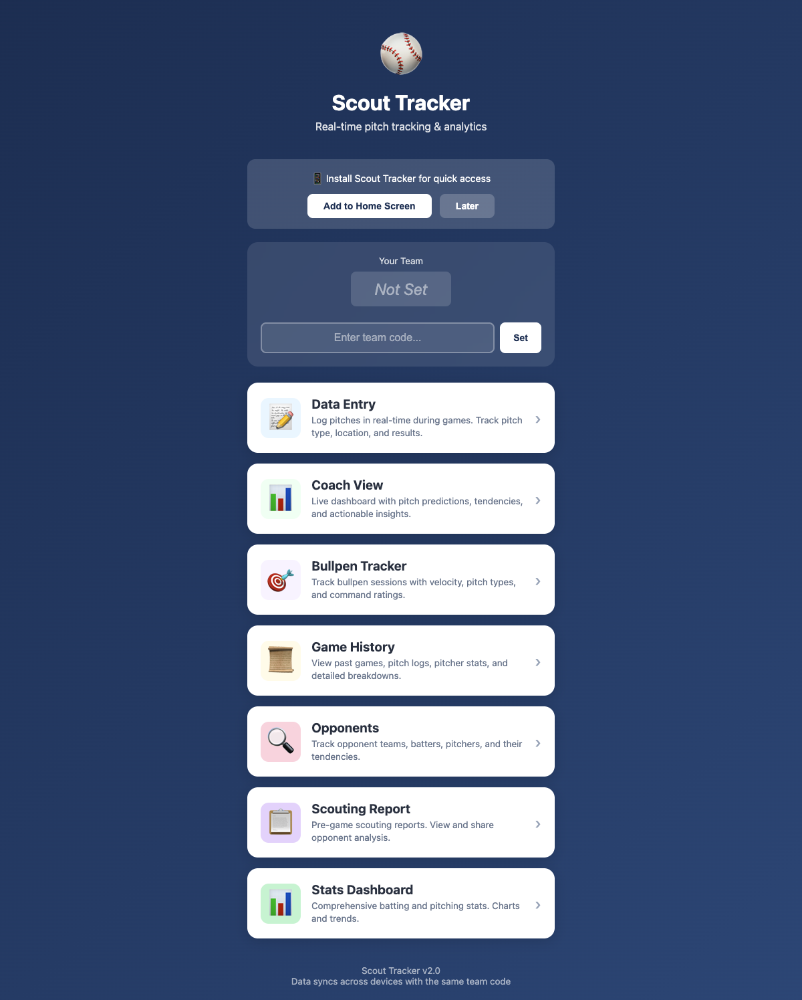
Step 3: Add to Home Screen
📱 Pro Tip: Add Scout Tracker to your phone's home screen for instant access on game day!
iPhone: Tap Share → Add to Home Screen
Android: Tap Menu → Add to Home Screen
Once set up, you'll see all available features:
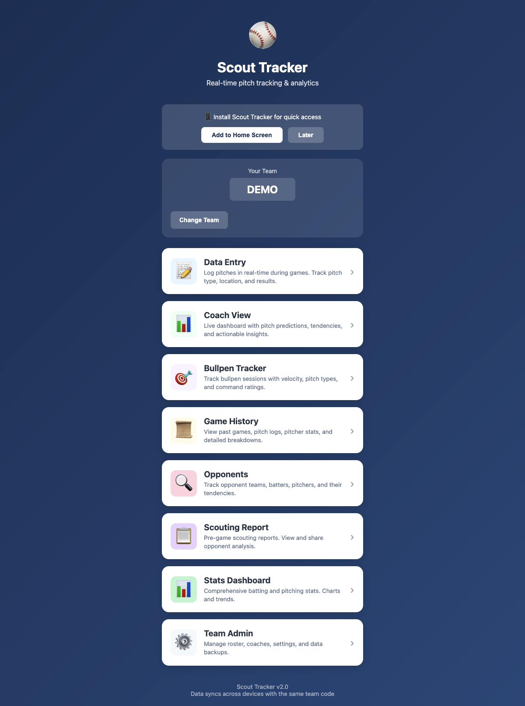
📝 Data Entry (Game Tracking)
This is where you'll spend most of your time during games. It's designed for quick, one-handed operation from the dugout.
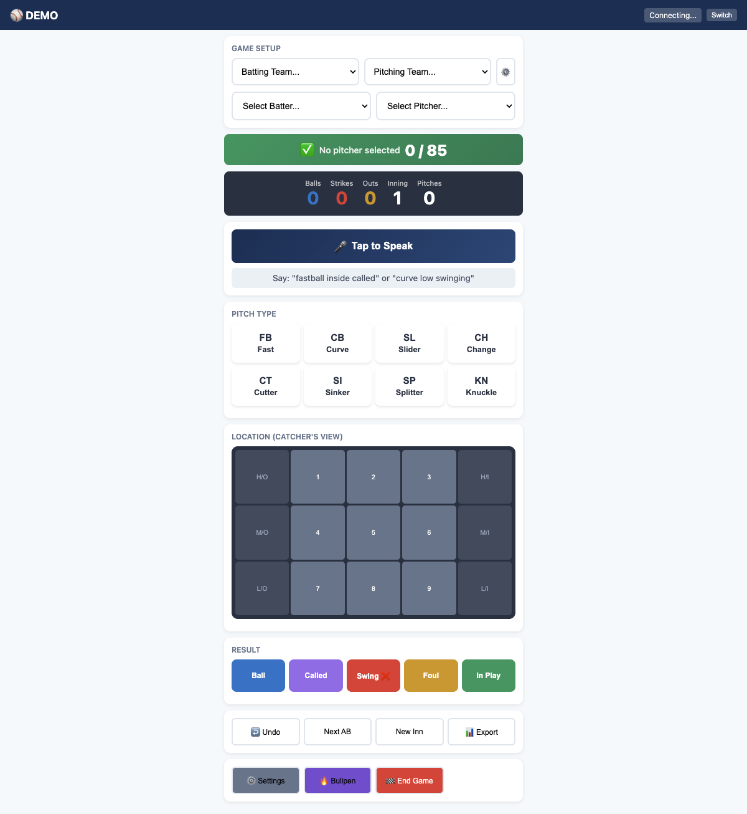
Recording a Pitch
- Select Pitch Type — FB, CB, SL, CH, CT, etc.
- Tap Location — Use the 9-zone grid (catcher's perspective)
- Select Result — Ball, Strike, Foul, or In Play result
Pitch Count Alerts
The colored bar at the top shows the current pitcher's count:
- Green ✅ — Under warning threshold
- Yellow ⚠️ — Approaching limit (default: 70 pitches)
- Red 🛑 — At or over limit (default: 85 pitches)
⚾ Pitch Count Safety: Youth leagues have strict pitch count rules. Configure your limits in Admin → Settings to match your league's requirements.
Managing Teams & Rosters
Tap the ⚙️ button to add teams and players:
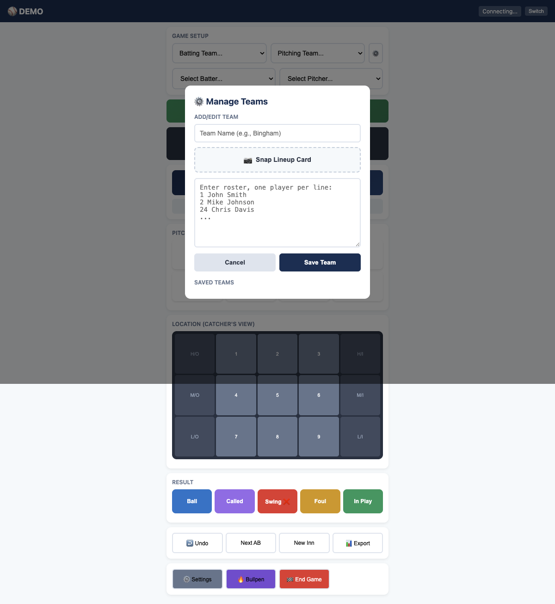
📊 Coach View (Live Dashboard)
The Coach View shows real-time analytics during the game — perfect for a second device in the dugout or a parent helping track.
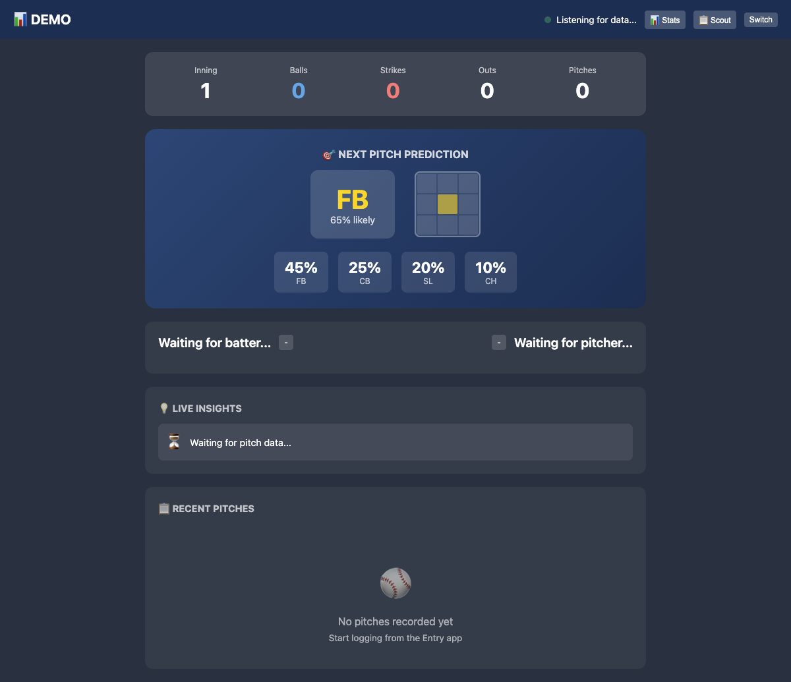
What You'll See
- Current Count — Balls, strikes, outs, inning
- Pitch Distribution — What pitches have been thrown
- Location Heatmap — Where pitches are landing
- Pitcher Stats — Live strike %, pitch count
💡 Tip: Open Coach View on a tablet and keep it visible in the dugout. It updates automatically as pitches are logged.
🎯 Bullpen Tracker
Track bullpen sessions separately from games — great for practice and warm-ups.
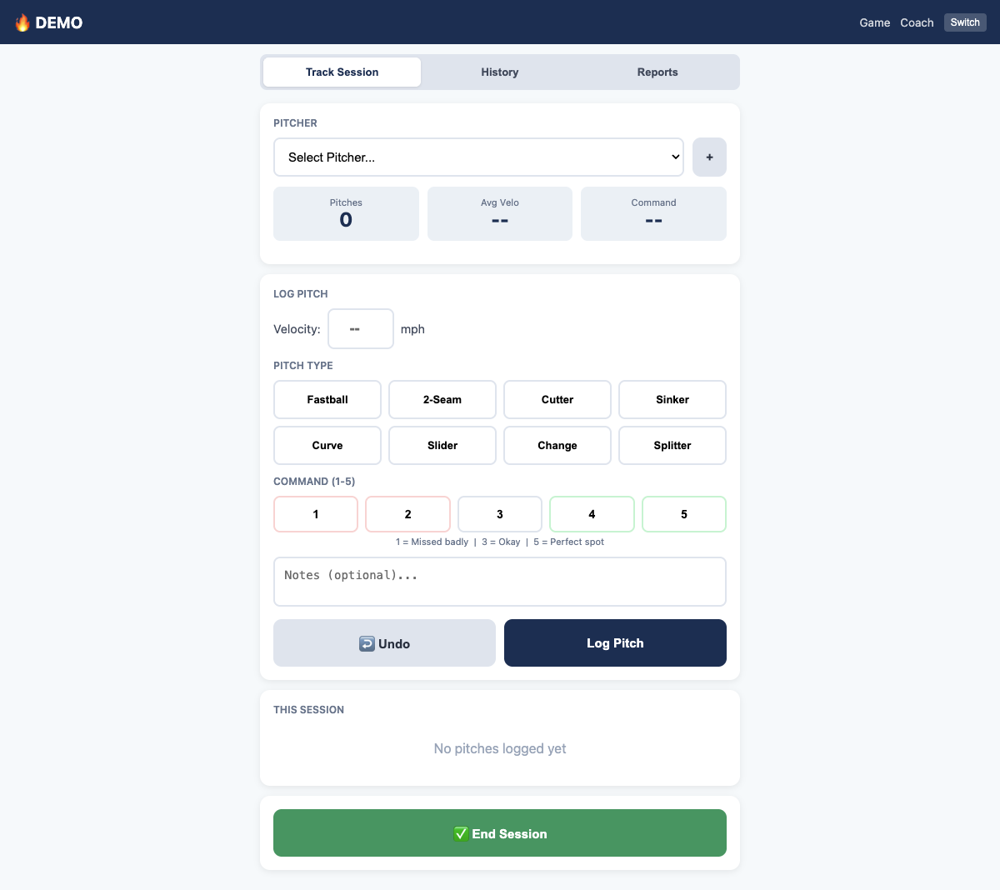
- Log pitch types and locations during practice
- Track velocity if available
- Monitor cumulative pitch counts across sessions
- Notes for each session
📜 Game History
Review past games with full pitch-by-pitch details.
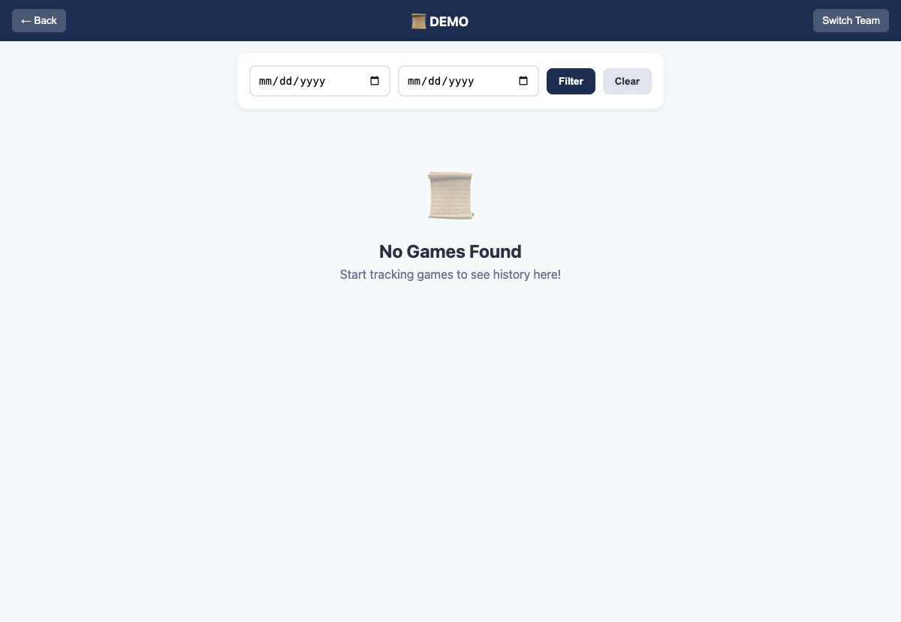
For Each Game
- Date, opponent, final pitch count
- Expand to see inning-by-inning breakdown
- Full pitch log with types, locations, results
- Export to PDF for records
🔍 Opponent Database
Build scouting profiles on teams you'll face again.
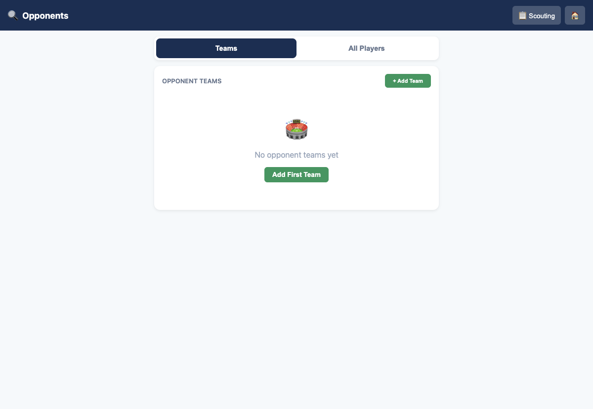
Track Opponent Batters
- Name, number, bats L/R/S
- Pull/center/opposite tendency
- Ground ball / fly ball tendency
- Weaknesses and strengths (notes)
- Historical results against your pitching
Track Opponent Pitchers
- Pitch repertoire (FB, CB, SL, CH, etc.)
- Velocity ranges
- Tendencies by count (first pitch, ahead, behind)
- Fatigue indicators
📈 Over Time: The more games you track, the better your scouting data becomes. Results are automatically saved to opponent profiles.
📋 Pre-Game Scouting Reports
Before a game, pull up everything you know about the opponent.
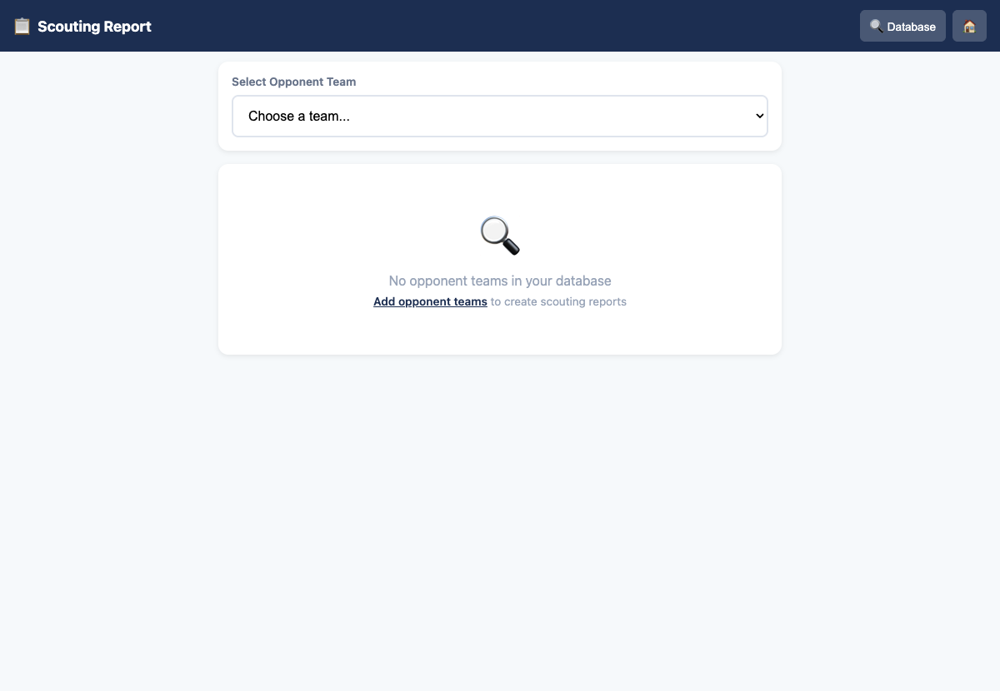
Report Includes
- Their full roster with your notes
- Batter tendencies and weaknesses
- Pitcher tendencies and how to beat them
- "Last time we faced them" summary
- Auto-generated approach recommendations
🖨️ Print Report
Great for posting in the dugout!
📈 Stats Dashboard
View team and individual statistics with visual charts.
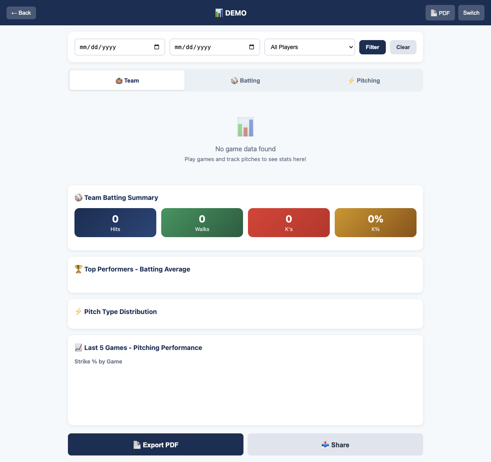
Team Stats
- Games played, record (W-L)
- Team batting average
- Team strike percentage
Individual Batting
- Games, at-bats, hits, average
- Extra-base hits
- Walk rate, strikeout rate
Individual Pitching
- Games, total pitches
- Strike %, K/BB ratio
- Pitches per inning
📄 Export PDF
⚙️ Team Administration
Manage your team settings, roster, and data.
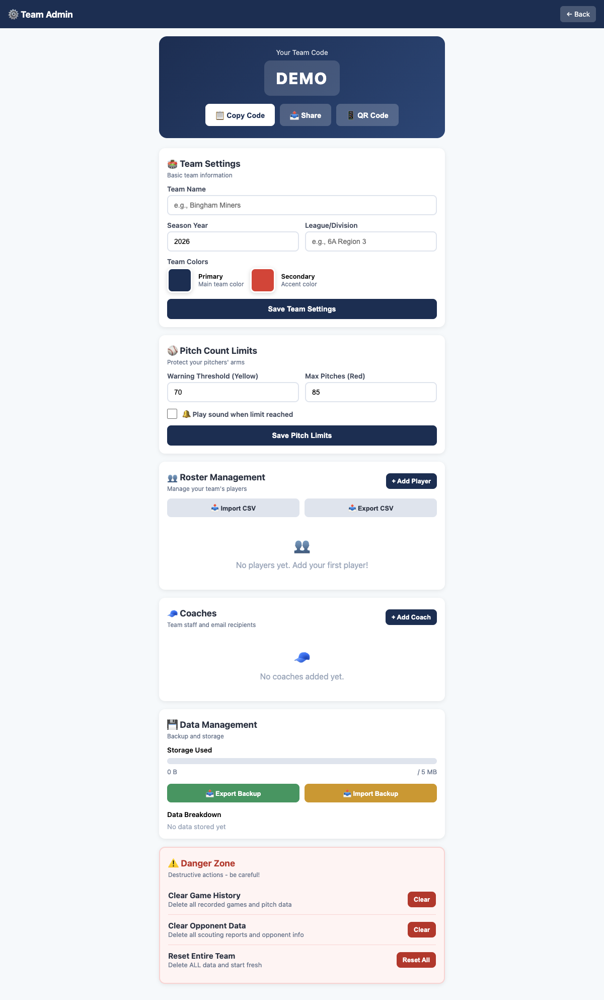
Team Settings
- Team name, season, league
- Pitch count limits (warning & max)
- Sound alerts on/off
Roster Management
- Add/edit/remove players
- Drag to reorder lineup
- Import from CSV
- Export to CSV
Coach Management
- Add coach emails
- Assign roles (Head Coach, Assistant, Scorekeeper)
Data Management
- Backup all data to JSON file
- Restore from backup
- Clear specific data (games, opponents)
⚠️ Danger Zone: The admin panel has options to delete data. Use with caution!
❓ Need Help?
Having issues? Here are some quick fixes:
- Data not syncing? Make sure all coaches are using the same team code
- App not loading? Check your internet connection, or use offline mode
- Lost your data? Check Admin → Data Management for backups
🏠 Back to App
⬆️ Back to Top